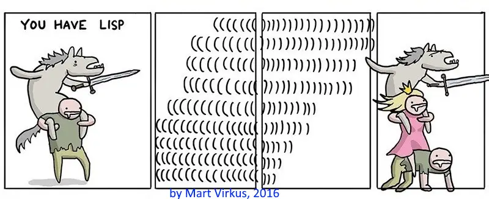

Thoughts on Lisp, part 2

Initially my adventures in Lisp began in search for the ultimate programming language. One that would be expressive, powerful, fast, and suitable for wide variety of tasks. One ultimate programming language that would be the last word, the only programming language one would ever need. After delving into both Scheme and Common Lisp, and evaluating their strengths and weaknesses, it is now clear to me that Common Lisp is much closer to be the ultimate programming language of those two lisp variants. It also should be clear to any Scheme programmer. Any person working with Scheme must admit that Scheme is ever-expanding. Scheme is in somewhat similar situation as most other languages: features are being added, not removed, core operations are not being honed, crystallized and set in stone. Seeing how Scheme has expanded over R5, R6 and R7, it can’t be the ultimate programming language.
However! Neither is Common Lisp.
# Reality mismatch
Common Lisp, along with other lisps, are weird. Weird in the amount of hype, praise and legends lisp generates on the other hand. Weird in how little visible accomplishments they have. There is a gross mismatch between these two. It is also weird, how lisps went out of fashion and never really got back. It is even debatable were they ever in fashion in the first place. My first experiences with programming were on Commodore 64 BASIC. Obviously, I didn’t know that I was programming when I wrote BASIC commands to get games running or make funny sounds. But reflecting, it wasn’t lisp, it was another language. A very basic language, easy to read and understand. Why BASIC? Why didn’t C64 ship with some lisp instead if it was so good? Why wasn’t it made in lisp if lisp was so good?
This applies to every single greater and smaller project, with the only exception being Lisp Machines, which were remarkably short-lived apparats. Lisp despite its claims to superiority and to this day its many proponents hasn’t achieved much when measured in what has been made with it. I can’t give any estimate of how much of world’s IT infrastructure runs on programs made of lisp, but I do know that Linux, UNIX systems including BSD’s and OS X, and Microsoft Windows are not made in lisp. Neither are databases, embedded systems or Internet applications. Those alone constitute enormous portion of world as it is in cyberspace of today.
# Personal experiences
Having worked with Common Lisp and Clojure for a few ECT's worth plus some hobby coding for fun, I can further reflect other languages via those. While lisps are seemingly simple and straightforward to write with little so-called boilerplate code, it does come with a price. It wasn’t until my hobby projects started becoming larger that I began to truly appreciate wordiness of languages such as Java, and type systems, and object paradigm. Returning to lisp code after a pause is disorienting. You don’t have safety rail to lean on, by which I mean it is hard to deduce what exactly program does at a glance. Unlike with Java and other typed languages, I can’t simply glance at method signature and immediately see what type it works with and what it returns. Over time, my function comments in Common Lisp started resembling Java signature to remedy that shortcoming. While at university courses I absolutely hated writing signatures which I considered confusing speed bumps to actual fun programming part, lisp unexpectedly made me miss those. It also made me miss writing code with many kinds of parentheses to signal different uses. It made me miss a lot of things which at first blush of lisp I had declared stupid compared to simplicity of lisp. In the end, all that so-called boilerplate had its purpose, something that became increasingly obvious the more I worked with lisp.
Granted, I am heavily biased towards typed, procedural and object-oriented programming styles due to languages I used before Common Lisp being typed, procedural and object-oriented. However, dabbling with Common Lisp (and Scheme to lesser extent) ultimately did not change my preference, despite curious and positive attitude. And this might be one key to understanding enormous paradox of why lisps are simultaneously much hyped whilst little used. They fail to prove their claimed superiority on hands-down level in succinct easily appreciated manner. It doesn’t help that large projects written in lisp for aspiring programmer to appreciate and look up to for inspiration do not exist. Combined with attitude of lispers sticking to their claim that lisp is awesomely superior compared to “lesser programming languages”, it gives the whole thing a nasty stench of posers. Much talk, nothing to show for it. That is something that irks me greatly.
Reflecting, there is wisdom in the following quips by Bjarne Strousup: “There are only two kinds of languages: the ones people complain about and the ones nobody uses.” and “There are more useful systems developed in languages deemed awful than in languages praised for being beautiful.” We can observe that both quips are true. Somehow, for reasons I have personally reflected above included into that somehow, people ultimately prefer claimed opposite to neatly designed elegant languages to get the job done when it really needs to be done. Quite a paradox!
# Conclusions
So, Common Lisp was not the ultimate programming language I was searching for. Battle axe as it may be, the essential fact that it failed to not only override my preferences permanently, but more importantly has failed to make great impact on software industry landscape, tells a story of its own. If programmers do not jump the ship from other languages for myriad of reasons, each for their own reasons of course, then it must be admitted that Common Lisp cannot be the ultimate programming language that makes every other language obsolete. If competitive edge gained from it truly were as great as lispers claim, corporations would be pushing everyone to use it or be competed out of market, overriding individual developer preference. But they do not. Neither does academia.
I still have a dream of such an ultimate programming language, if not for other reason than for lessening cognitive load of people in IT so that we all can speak same programming language and truly focus on what we are doing instead of focusing on multiple programming languages and keeping tabs on how those develop. Learning from reflections, I will not embark on designing such language, as I now believe such language already exists among hundreds of different programming languages, and I believe if it is The One, it must manifest via organic growth where its benefits are so obvious compared to competing programming languages, that developers and corporations switch to it autonomously.